- 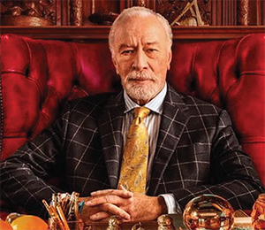
Harlan Thrombey
- 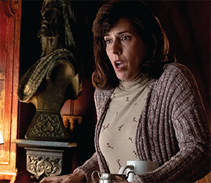
Fran
- 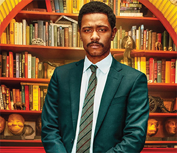
Detective Elliot
Trooper Wagner
Marta Cabrera
- 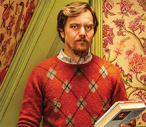
Walt Thrombey
- 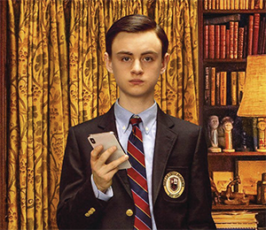
Jacob Thrombey
- 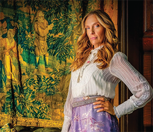
Joni Thrombey
Meg Thrombey
- 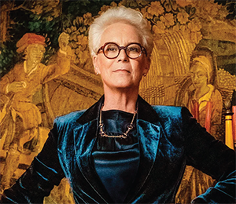
Linda Drysdale
Richard Drysdale
- 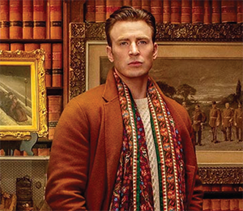
Hugh Random Drysdale
- 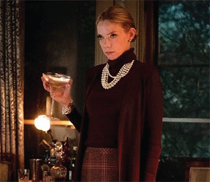
Donna Thrombey
- 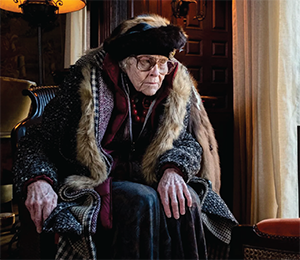
Wanetta Thrombey
Alan Stevens
- 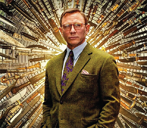
Benoit Blanc

Harlan Thrombey is the world’s most successful mystery writer and the patriarch of this whole insidious clan. When he turns up dead under mysterious circumstances, the game is afoot... Fran is Harlan's housekeeper and is the first to find his body. Is she simply a witness, or is there more to her than meets the eye? Detective Elliotis the cool headed local police detective. He’s ready to rule Harlan’s death a suicide... but then the clues and motives start to surface, and suddenly he’s not so certain...
Trooper Wagner is another member of the police helping to solve the Thrombey case. As a lover of Thrombey's novels, could he hold any insight into what happened to the author? Marta Cabrera is Harlan’s devoted caregiver. She was closest to Harlan, and has some secrets of her own to keep... secrets worth killing for? Walt Thrombey is Harlan’s youngest son. Walt runs the family publishing company, but his ambitions reach much farther. Would he... kill for them? Jacob Thrombey is Walt’s son. He spends every moment of the day on his phone... could he have trolled his way into murder? Joni Thrombey is Harlan’s daughter in law. She’s made a killing with her lifestyle brand Flam®... but if she was desperate enough, would she stop there?
Meg Thrombey is Joni’s daughter. Well studied at the best liberal arts colleges in New England... but could her syllabus have included cutlery skills? Linda Drysdale is Harlan’s eldest daughter. She has a head for business... does she have a heart for homicide? Richard Drysdale is Linda’s husband. When his indiscretions catch up with him, who knows how far he’ll go to conceal the truth... Ransom Drysdale is Richard & Linda’s son. Born with a honeyed but forked tongue and a silver spoon in his mouth. A knife would complete the set...
Donna Thrombey is the wife of Walt and mother to Jacob. To what lengths would she go to protect her family (and her privilege?) Wanetta Thrombey is Harlan’s ancient mother who just outlived her son. What would grief drive a mother to do? Alan Stevens reads Harlan's will to the family when they are assembled. Is there a surprise in the will that would drive someone mad enough to kill? Benoit Blanc is a gentleman sleuth of great renown. Summoned to this nest of iniquity by mysterious means, it falls to the great detective to solve the case... before the murderer strikes again...